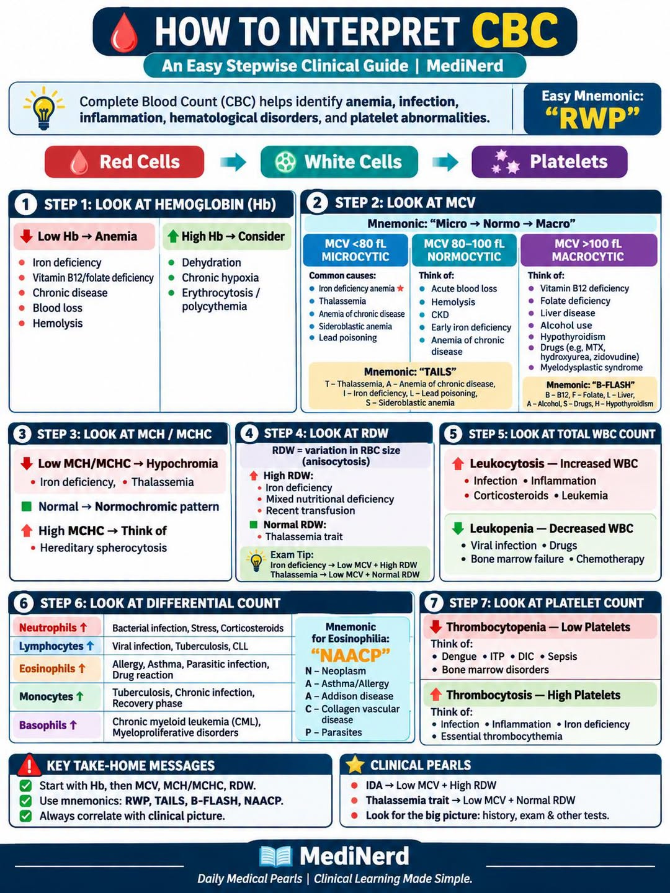

How to interpret a CBC blood test.
#cbcHD #hemoglobinHD #mcvHD #mchHD #mchcHD #rdwHD #wbcHD #plateletsHD #neutrophilsHD #lymphocytesHD #eosinophilsHD #monocytesHD #basophilsHD
A shared infographic explains how to read a CBC in order: hemoglobin, MCV, MCH/MCHC, RDW, white cells with differential, then platelets, using the 'RWP' mnemonic. It covers what low or high values may point to, such as anemia, infection or platelet abnormalities. It is a general clinical reference rather than heart-specific content.
How to interpret a CBC blood test.
#cbcHD #hemoglobinHD #mcvHD #mchHD #mchcHD #rdwHD #wbcHD #plateletsHD #neutrophilsHD #lymphocytesHD #eosinophilsHD #monocytesHD #basophilsHD
🩸 HOW TO INTERPRET CBC — AN EASY CLINICAL APPROACH
📚 A Simple Stepwise Clinical Guide
💡 Complete Blood Count (CBC) helps identify anemia, infection, inflammation, hematological disorders, and platelet abnormalities.
👉 EASY CLINICAL APPROACH:
🔴 Hb → MCV → MCH/MCHC → RDW → WBC → Differential Count → Platelets
🧠 Easy Mnemonic: “RWP”
- 🔴 R — Red cells
- ⚪ W — White cells
- 🟣 P — Platelets
1️⃣ STEP 1: LOOK AT HEMOGLOBIN (Hb)
🔻 Low Hb → Anemia
Common causes:
- Iron deficiency
- Vitamin B12/folate deficiency
- Chronic disease
- Blood loss
- Hemolysis
🔺 High Hb → Consider
- Dehydration
- Chronic hypoxia
- Erythrocytosis/polycythemia
2️⃣ STEP 2: LOOK AT MCV
🧠 Mnemonic: “Micro → Normo → Macro”
🔴 MCV <80 fL — Microcytic anemia
- Iron deficiency anemia
- Thalassemia
- Anemia of chronic disease
- Sideroblastic anemia
- Lead poisoning
🧠 Mnemonic: “TAILS”
- T — Thalassemia
- A — Anemia of chronic disease
- I — Iron deficiency
- L — Lead poisoning
- S — Sideroblastic anemia
🟢 MCV 80–100 fL — Normocytic anemia
- Acute blood loss
- Hemolysis
- Chronic kidney disease (CKD)
- Early iron deficiency
- Anemia of chronic disease
🔵 MCV >100 fL — Macrocytic anemia
- Vitamin B12 deficiency
- Folate deficiency
- Liver disease
- Alcohol use
- Hypothyroidism
- Drugs (e.g., methotrexate, hydroxyurea, zidovudine)
- Myelodysplastic syndrome
🧠 Mnemonic: “B-FLASH”
- B — B12 deficiency
- F — Folate deficiency
- L — Liver disease
- A — Alcohol
- S — Stimulating/causative drugs
- H — Hypothyroidism
3️⃣ STEP 3: LOOK AT MCH / MCHC
🔻 Low MCH/MCHC → Hypochromia
- Iron deficiency
- Thalassemia
🟢 Normal MCH/MCHC → Normochromic pattern
🔺 High MCHC → Think of
- Hereditary spherocytosis
- Other causes of increased RBC concentration
4️⃣ STEP 4: LOOK AT RDW
💡 RDW = variation in red blood cell size (anisocytosis).
🔺 High RDW → Think of
- Iron deficiency
- Mixed nutritional deficiencies
- Recent blood transfusion
🟢 Normal RDW — Classically seen in
- Thalassemia trait
📌 EXAM TIP:
- Iron deficiency → Low MCV + High RDW
- Thalassemia trait → Low MCV + Relatively normal RDW
5️⃣ STEP 5: LOOK AT TOTAL WBC COUNT
🔺 Leukocytosis → Increased WBC
Common causes:
- Infection
- Inflammation
- Corticosteroids
- Leukemia
🔻 Leukopenia → Decreased WBC
Common causes:
- Viral infection
- Drugs
- Bone marrow failure
- Chemotherapy
6️⃣ STEP 6: LOOK AT DIFFERENTIAL COUNT
🔴 Neutrophils ↑
- Bacterial infection
- Stress
- Corticosteroids
🔵 Lymphocytes ↑
- Viral infection
- Tuberculosis
- Chronic lymphocytic leukemia (CLL)
🟠 Eosinophils ↑
- Allergy
- Asthma
- Parasitic infection
- Drug reactions
🟢 Monocytes ↑
- Tuberculosis
- Chronic infections
- Recovery phase after acute infection
🟣 Basophils ↑
- Chronic myeloid leukemia (CML)
- Myeloproliferative disorders
🧠 Mnemonic for eosinophilia: “NAACP”
- N — Neoplasm
- A — Asthma/Allergy
- A — Addison disease
- C — Collagen vascular disease
- P — Parasites
7️⃣ STEP 7: LOOK AT PLATELET COUNT
🔻 Thrombocytopenia → Low platelets
Think of:
- Dengue
- Immune thrombocytopenia (ITP)
- Disseminated intravascular coagulation (DIC)
- Sepsis
- Bone marrow disorders
🔺 Thrombocytosis → High platelets
Think of:
- Infection
- Inflammation
- Iron deficiency
- Essential thrombocythemia

Louis notes persistent lymphopenia is associated with higher mortality, possibly via thymus involution, and that absolute lymphocyte count is on a standard CBC. The quoted explanation links low ALC with worse outcomes in critically ill patients including those with heart failure.
Louis shares a physician's explanation that low iron can inflate HbA1c, possibly by slowing red blood cell turnover so older cells with more glycation remain in circulation. If A1c seems high on a healthy diet, check iron status.

A JAMA editorial presented at Kidney Week says SGLT2 inhibitors consistently raise hemoglobin and hematocrit in people with cardiovascular disease, heart failure or chronic kidney disease, with or without diabetes. This may contribute to anemia management on top of their established cardiovascular and kidney benefits.

A shared infographic gives a stepwise approach to liver function tests: bilirubin, then AST/ALT, ALP/GGT, albumin/INR, then pattern and cause. It helps readers see whether abnormal results suggest hepatocellular injury, cholestasis or reduced synthetic function. General clinical reference with no study cited.

A shared infographic gives a mnemonic approach to liver function tests: ALT/AST for hepatocellular injury, bilirubin, cholestatic enzymes ALP/GGT, decreased synthesis (albumin/PT/INR) and etiology. Overlaps with a similar earlier infographic.

William Wallace's shared explanation: neutrophils use vitamin C as an internal antioxidant pool to survive the respiratory burst they use to kill microbes. In healthy people neutrophil levels saturate at around 200 mg twice per day, and the dose needed to saturate them rises during infections.